Sign In to the AWS console: https://console.aws.amazon.com/console/home
You will get to the AWS Sign In screen:
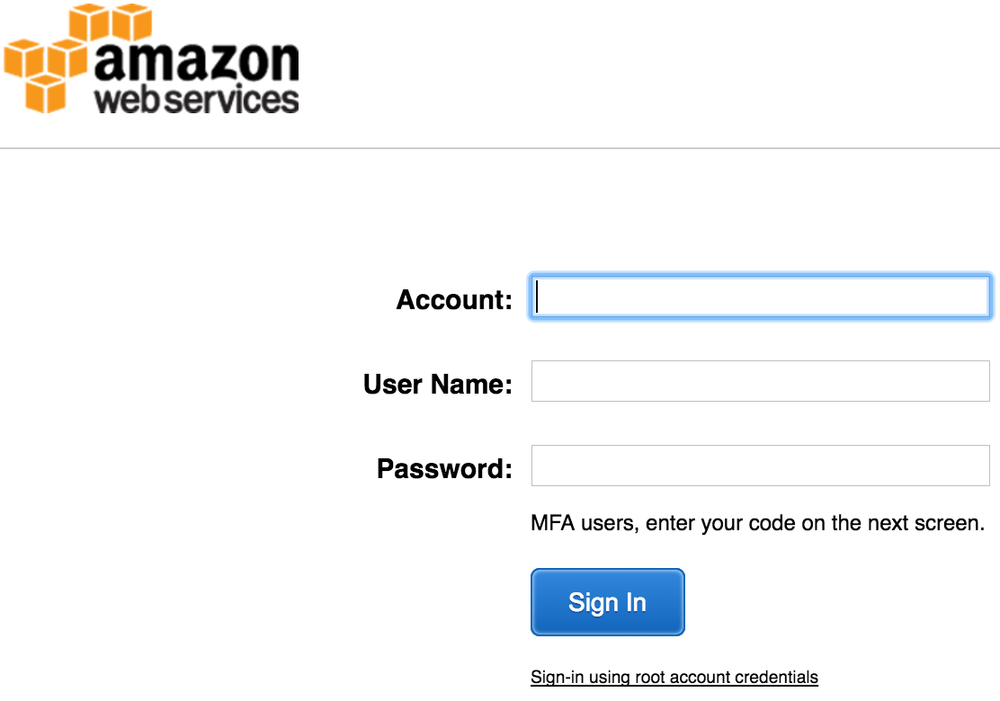
Enter your credentials and Sign In. The next screen shows the big list of AWS services:
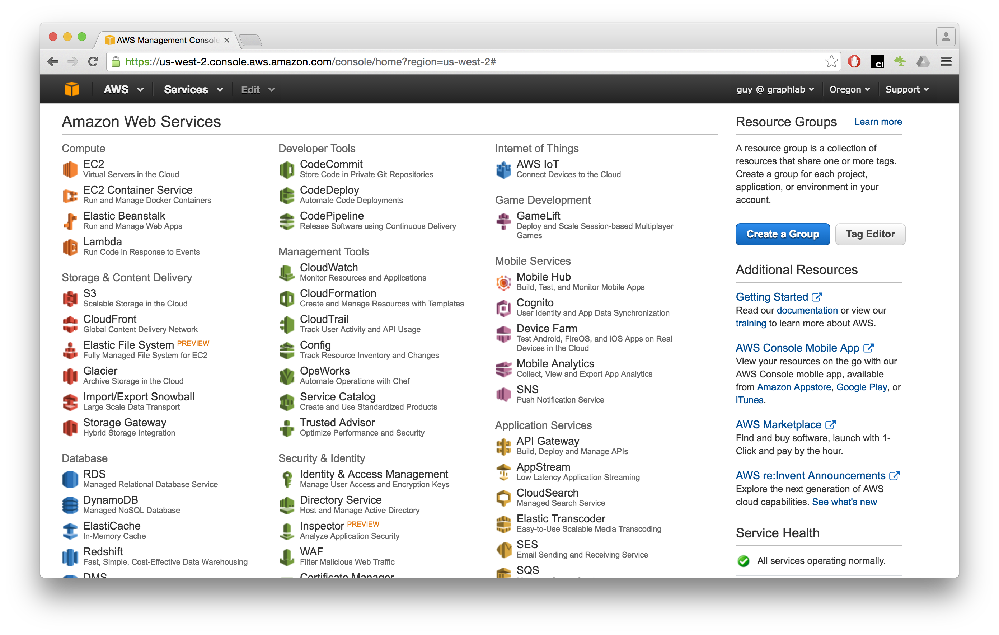
Note the top-right corner: between your account (guy @ graphlab in this example) and the Support dropdown, you should see your AWS region. In this example, the region is Oregon. If your region is different, click on the regions dropdown and select US West (Oregon). This is the region where we stored the dato for this benchmark. If you'll use the same region as we did, then pulling the data from S3 will be much, much faster.
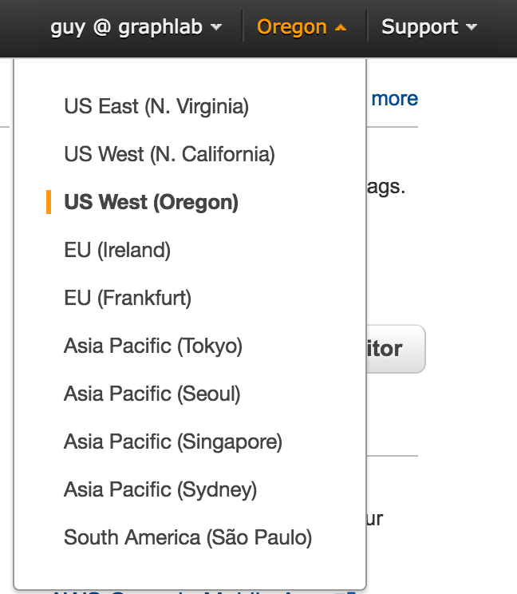
Now that your region is properly set, click on the EC2 icon (first item in first column, top-left icon.)
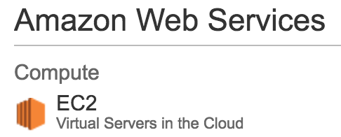
You will be presented with the EC2 Management Console.
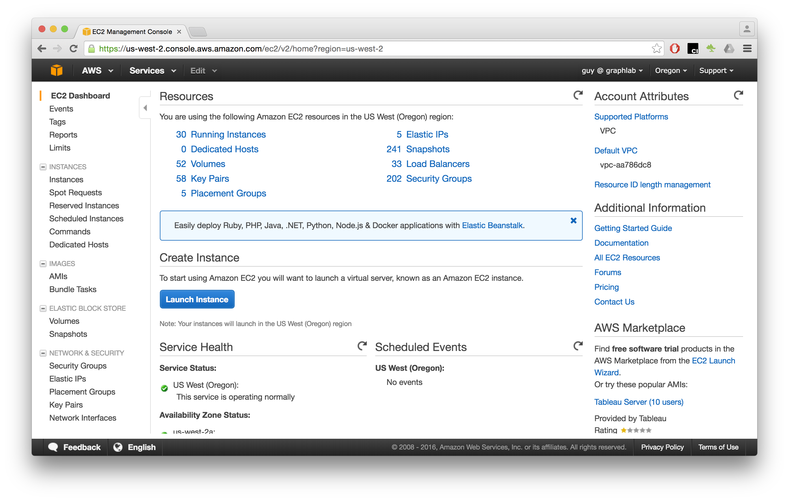
On the left sidebar, under ths INSTANCES category, choose the Instances option.
Click on the Launch Instnace button.
You will now follow a set of steps necessary for launching an instance. This is the screen of Step 1: Choose an Amazon Machine Image (AMI).
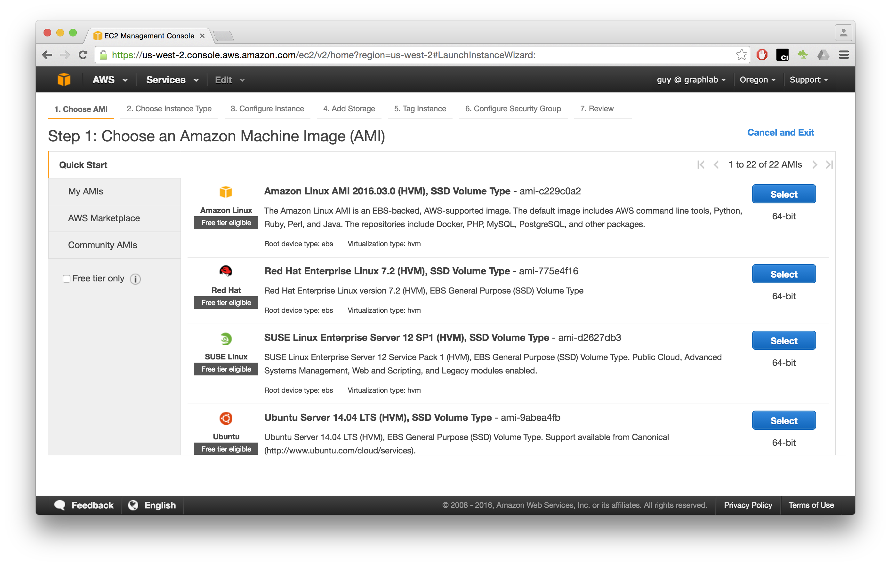
Scroll the list of AMIs down to Ubuntu Server (the current version is Ubuntu Server 14.04 LTS (HVM), SSD Volume Type - ami-9abea4fb). Click on the Select button.
Scroll down the list of instance types and choose r3.8xlarge. That's a strong machine, with 32 cores, 244 Gigabytes of RAM, and 2 SSD drives, each sized 320 GBs.
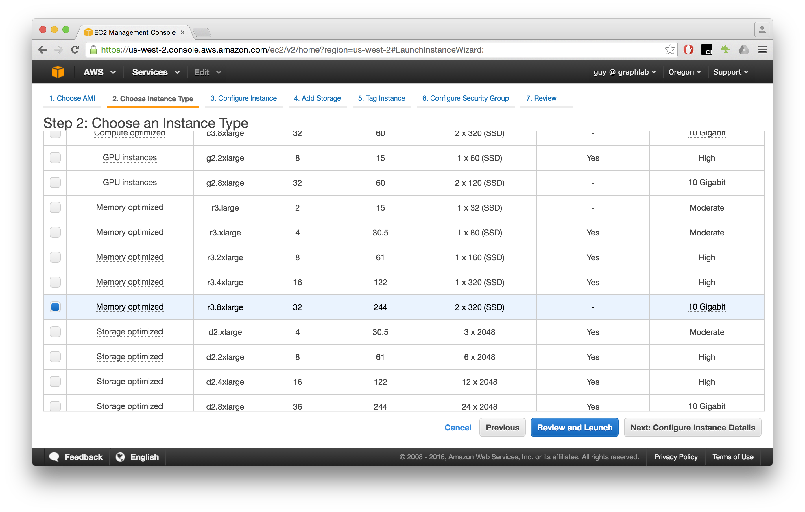
After you chose the type, in the breadcrumb list of steps, skip to 4. Add Storage.
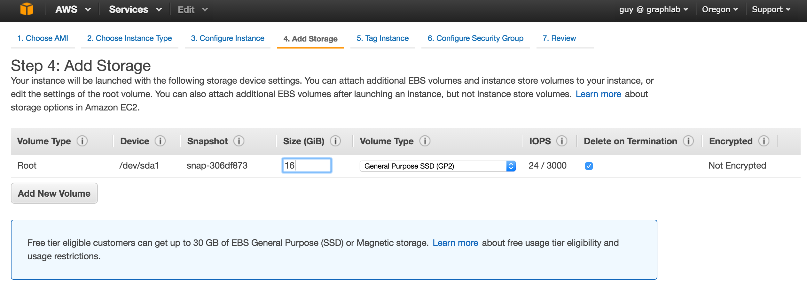
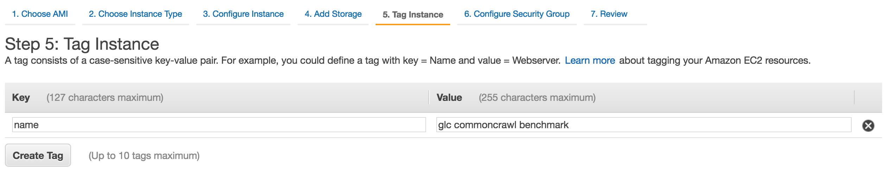
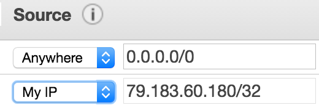
Button
You can review your instance's configuration. When finished, click on the Launch button to finally launch your instance!
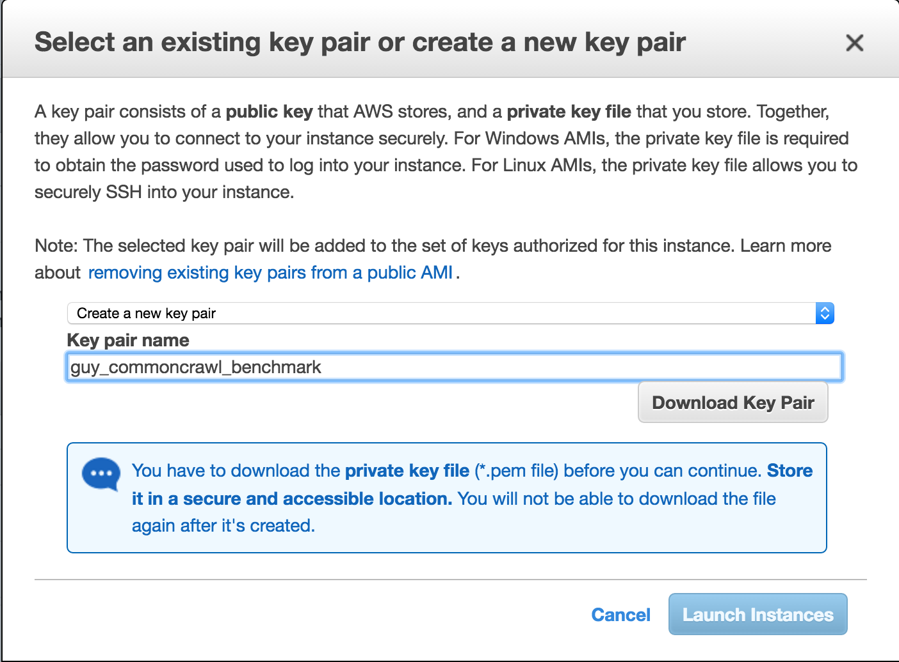
But how will you connect to your instance? Upon Launch, AWS immediately asks you to provide an SSH key pair. If you don't have such a key pair, you can choose the Create a new key pair option. Give it a Key pair name, then click on the Download Key Pair button.
After the key pair we downloaded, click on the Launch Instances button.
You will get the following status screen:

In my case, it says:
The following instance launches have been initiated: i-84dea55c
Click on the instance name (i-84dea55c in this example) to get to your instance's status screen.
From OS X or Linux, simply run the following command in your terminal:
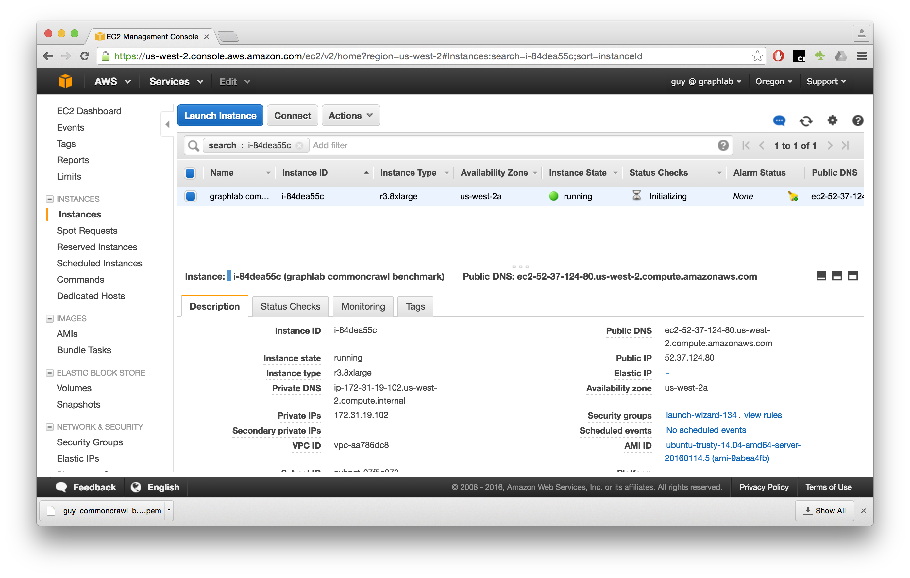
Click on the Connect button.
You will see AWS' instructions for connecting to your instance.
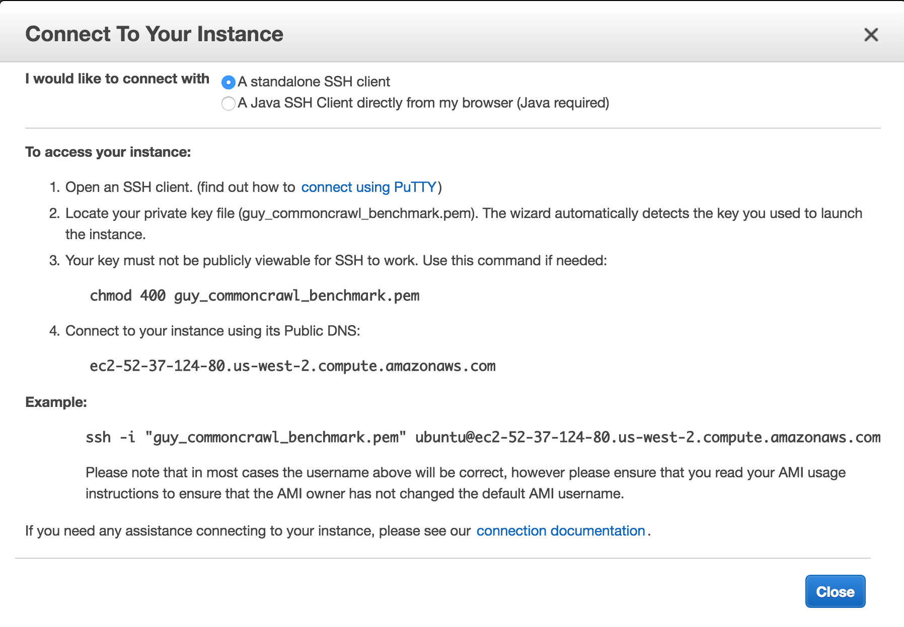
Follow the instructions, and note the public DNS assigned to your instance
(in the example above, it is ec2-52-37-124-80.us-west-2.compute.amazonaws.com).
If you are in OS X or Linux, you can connect to your instance from the shell:
ssh -i "/PATH/TO/DOWNLOADED/KEY_FILE.pem" ubuntu@<your-ec2-public-dns>.compute.amazonaws.com
# In my case, the command is:
ssh -i "/Users/dato/Downloads/guy_commoncrawl_benchmark.pem" ubuntu@ec2-52-37-124-80.us-west-2.compute.amazonaws.com
You can also follow AWS' online instructions at: https://docs.aws.amazon.com/console/ec2/instances/connect/docs
They also have instructions written specifically for PuTTY, a famous Windows SSH client.
Now that you are logged into your instance via ssh, run each of the following commands.
Note: pasting all the commands will only run the first one. Please run each command separately.
The instructions for securing the notebook server are taken from Jupyter's website.
# Install Python, VirtualEnv
sudo apt-get update
sudo apt-get install -y build-essential python-setuptools zlib1g-dev
sudo easy_install pip
sudo pip install virtualenv
# Create a VirtualEnv for GraphLab Create
virtualenv graphlab_venv
cd graphlab_venv
source bin/activate
pip install graphlab-create
cd ~
# Install Jupyter (IPython-Notebook)
sudo apt-get install -y python-dev
pip install jupyter
# Password protect Jupyter
jupyter notebook --generate-config
python -c "from notebook.auth import passwd; password = passwd(); open('/home/ubuntu/.jupyter/jupyter_notebook_config.py', 'a').write('c.NotebookApp.password = u\'%s\'' % (password))"
# Download the Benchmark's IPython Notebook
wget <public address of the notebook>
# Run the notebook
nohup jupyter notebook --no-browser --ip="*" & > pid
The Jupyter server is now running. You should browse to http://<your instance address>:8000 . This is what you're supposed to see in your browser:
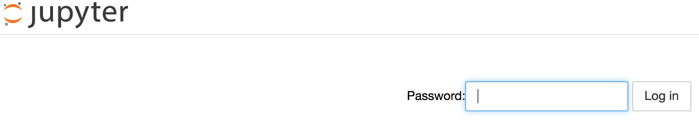
Use the password you entered in order to log into the notebook server.
The rest of the benchmark can be executed via your browser.